Chairman |
||
 |
Zhongze Gu |
Gu Zhongze is currently the Dean of the School of Biological Science and Medical Engineering of Southeast University, the director of the State Key Laboratory of Digital Medical Engineering, and the chairman of the Organoid-on-a-Chip Branch of the Chinese Society of Biomedical Engineering. He has been engaged in research on human organ chip for a long time, and his research results have published more than 400 papers in international core journals. Won more than 100 national invention patents, transferred 13 patents. He has won the first prize of Natural Science of the Ministry of Education, the first prize of Science and Technology Award of Jiangsu Province, and presided over the key scientific problems of Transformative technology under the National Key Research and Development Program, the 863 high-tech research and Development Program, and the key projects of the National Natural Science Foundation. |
 |
Yun Liu |
LIU Yun, Level-2 professor, doctoral supervisor, Level-2 Doctor-in-charge, president of Jiangsu Province Hospital (the First Affiliated Hospital with Nanjing Medical University), director of Institute of Medical Informatics and Management of Nanjing Medical University, member of the National Committee of the CPPCC, deputy director of Jiangsu Committee of Chinese Peasants And Workers Democratic Party, State Council Special Allowance Expert, chief scientist of National Key R&D Program of China, Vice Chairperson of the Standards Committee of Chinese Medical Information and Big Data Association, winner of the "National Labor Day Medal" in Jiangsu province, "National advanced individual in the fight against COVID-19", Top medical talent in Jiangsu province, outstanding key medical talent of health promotion project by science and education in Jiangsu province, and key medical talent of health strengthening project by science and education. Prof. Liu has received multiple honors in academic area, including the second prize of Jiangsu Provincial Science and Technology Award, undertaken 20 national and provincial projects, published nearly 100 SCI papers, edited and translated 4 books, and holds 6 national invention patents. |
 |
Kam W. Leong |
Kam Leong is the Samuel Y. Sheng Professor of Biomedical Engineering at Columbia University, and holds an Interdisciplinary Faculty position in the Department of Systems Biology. He is a pioneer in developing multifunctional nanoscale technologies for delivering drugs, antigens, proteins, siRNA, and DNA to cells. Innovations in the Leong Lab include biomaterials such as electrospun nanofibers for controlled release and tissue engineering, synthesis of biocompatible and near-infrared-emitting quantum dots, nucleic acid-binding polymers, and microfluidic platforms for nanomedicine. He has also designed nonviral gene delivery mechanisms for hemophilia treatment, genetic immunization, and cellular reprogramming. His recent work has focused on directly reprogramming adult cells from one lineage to another without going through the intermediate pluripotent state. His lab is particularly interested in how such approaches, based in tissue engineering and regenerative medicine, could offer new strategies for treating neurodegenerative disorders such as Alzheimer’s and Parkinson’s diseases. |
Special Invited Guests |
||
 |
Academician Yeguang Chen |
He is the director of the Chinese Society of Cell Biology, the president of the Asia-Pacific Society of Cell Biology (APOCB), and the editor of Cell Regeneration magazine. He mainly uses organoid model of digestive tract development and disease occurrence to explore the signal transduction mechanism of TGF-β and Wnt, as well as their roles in stem cell self-renewal and differentiation and tumor formation. |
 |
Academician Xiaosong Gu |
Director of the National Key Laboratory of Advanced Medical Materials and Medical Devices, Director of the Key Laboratory of Research and Evaluation of Tissue Engineering Technology Products of the State Drug Administration. Vice Chairman of the Chinese Society of Biomedical Engineering, honorary chairman of the Chinese Society of Anatomy, and deputy editor of the international English journal Curr Stem Cell Res Ther. |
Foreign guests |
||||
1 |
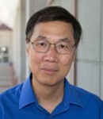 | Kam W. Leong |
A member of the National Academy of Engineering, the National Academy of Inventors, the National Academy of Medicine, and the Samuel Y. Sheng Professor in the Department of Biomedical Engineering at Columbia University. |
TBD |
2 |
 |
Danilo A. Tagle |
Director, Office of Special Initiatives at the National Center for Advancing Translational Sciences (NCATS) of the National Institutes of Health (NIH), USA |
The NIH Microphysiological Systems Program: Tissue on Chips for Safety, Efficacy and Precision Medicine Studies |
3 |
 |
Thomas Hartung |
Director of the Johns Hopkins Center for Alternatives to Animal Testing |
The state of the MPS revolution |
4 |
Uwe Marx |
Honorary Professor for Medical Biotechnology at the Technische Universität Berlin, Germany; |
Integrating human organoids into organismoids – how to achieve human body homeostasis in vitro? |
|
5 |
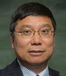 | Kaiming Ye |
Professor and Department Chair of Biomedical Engineering and director of the Center of Biomanufacturing for Regenerative Medicine at the Binghamton University (BU), State University of New York (SUNY) |
TBD |
6 |
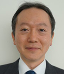 | Takao Ashikaga |
Section Chief, Division of Risk Assessment, Biological Safety Research Center, National Institute of Health Sciences, Kanagawa, Japan |
International standardization policy for MPS in Japan and development of in vitro respiratory toxicity test as an example of applied research. |
7 |
Bas van Balkom |
Assistant professor in the Dept of Nephrology and Hypertension, UMC Utrecht |
Investigating extracellular vesicle-based therapeutic options using alternatives for animal models |
|
8 |
 |
Lorna Ewart |
CSO of Emulate, USA |
Performance assessment and decision making capabilities of Liver-Chip to detect drug-induced liver injury |
9 |
Olivier Guenat |
Professor, Head Organs-on-Chip Technologies, ARTORG Center for Biomedical Engineering Research, University of Bern, Switzerland |
Organs-on-Chip Models of the Lung Parenchyma |
|
10 |
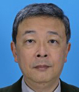 | Seiichi lshida |
Professor, Division of Applied Life Science, Graduate School of Engineering, Sojo University, Kumamoto, Japan |
The recent progress of MPS development and its implementation to regulatory acceptance in Japan. |
11 |
Lena Smirnova |
Assistant Professor of Environmental Health and Engineering at Bloomberg School of Public Health, Johns Hopkins University |
Advanced 3D brain MPS understanding neuronal network dynamics |
|
12 |
 |
Lisa Levin |
Alternatives Director for Coridea, LLC, USA |
Outcomes from a Multistakeholder Engagement to Address the Challenges Associated with the Development, Regulatory Approval, and Implementation of Non-Animal Methods in Biomedical Research, Drug Development, and Safety Testing |
13 |
Jan Lichtenberg |
Co-Founder & CEO of InSphero Inc., Zurich, Switzerland |
TBD |
|
14 |
Marian Raschke |
Head of Laboratory Advanced Cellular Models, Bayer Pharmaceuticals, Germany |
Advanced Cellular Models in the Pharmaceutical Industry – Current Use Cases and Future Perspectives |
|
15 |
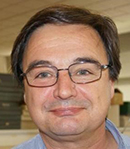 | Alastair Stewart |
Chair of Pharmacology and Therapeutics at the University of Melbourne; Director of the ARC Industrial Transformation Centre for Personalised Therapeutic Technologies; CSO and Director of TianLi Biotech; President of the Asia Pacific Federation of Pharmacologist |
Circadian Rhythm in MPS for CLOCK-targetting therapeutics |
16 |
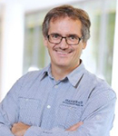 | Janos Vörös |
Head of Laboratory of Biosensors and Bioelectronics, Institute for Biomedical Engineering, University and ETH Zurich, Switzerland |
Well-defined neural networks on a chip |
17 |
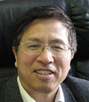 | Yong Chen |
Professor of Ecole Normale Supérieure (ENS); Directeur de Recherche (1st class) of CNRS and head of the ENS team for microfluidics, France |
A general organ-chip system for advanced applications |
18 |
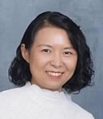 | Xuexuan Wang |
Director, WuXi AppTec, Laboratory Testing Division, DMPK |
The Applications of Organ Chips in DMPK Research – A Review and Perspectives |
Chinese Guests（Sort by last name） |
||||
1 |
Liang Chen |
Professor, Director of Department of Thracic Surgery, Jiangsu Province Hospital; Chairman of the Thoracic Surgery Branch of Jiangsu Medical Doctor Association; Former Chief Member of Jiangsu Provincial Medical Association, Thoracic Branch |
The precise minimally invasive treatment of early-stage lung cancer |
|
2 |
Pu Chen |
Professor, Chair of Department of Biological Science & Medical Engineering, Wuhan University Taikang Medical School |
Reproducible Production of Bioengineered Brain-Organoid-on-a-Chip in a Microplate |
|
3 |
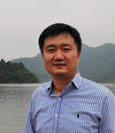 | Zaozao Chen |
Associate Professor, School of Biological Science and Medical Engineering, Southeast University; CTO of Jiangsu Avatarget Biotechnology Co. |
Potential of Microphysiological System in drug development |
4 |
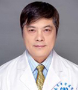 | Zhimin Fan |
Chief TCM physician, Professor, Prestigious Doctor of Chinese Medicine in Jiangsu Province, Vice Chairman of Anorectal Branch of China Association of Chinese Medicine, Chairman of Anorectal Branch of Jiangsu Association of Chinese Medicine |
Construction and Clinical Translation of Colorectal Cnacer Organoid Research System |
5 |
Qi Gu |
Director of Organ Engineering Laboratory at the Institute of Organ Manufacturing, Chinese Academy of Science |
How close is organ fabrication to achieving the natural complexity? |
|
6 |
Zhongze Gu |
Director of Organ Engineering Laboratory at the Institute of Organ Manufacturing, Chinese Academy of Science |
The Integration of Organs-on-Chip and Artificial Intelligence |
|
7 |
Di Huang |
Professor, Deputy Dean at School of Biological Science & Medical Engineering, Taiyuan University of Technology |
Lung-on-a-Chip Model and Printing Small-Size Blood Vessels |
|
8 |
Kuirong Jiang |
Chief Surgeon, Professor of General Surgery, Vice Director of Department of General Surgery, Director of Pancreas Center, Vice President of the First Affiliated Hospital of Nanjing Medical University |
Organoid Models and Microfluidic Platforms in Pancreatic Cancer |
|
9 |
Xingyu Jiang |
Chair Professor of Department of Biomedical Engineering, Southern University of Science and Technology; Fellow of the Royal Society of Chemistry (UK) and American Institute of Medical and Biological Engineering |
Electronic blood vessels for regeneration |
|
10 |
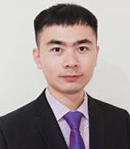 | Mingxing Lei |
Professor, Chair of Department of Biological Engineering, Chongqing University |
Skin Organoids and Hair Regeneration |
11 |
Ling Leng |
Professor, Chinese Academy of Medical Sciences & Peking Union Medical College; Director of Stem Cell Quality Control Laboratory at Peking Union Medical College |
Construction and Application of Complex Skin Organoid |
|
12 |
Chenzhong Li |
Professor of Biomedical Engineering, Biochemistry, The Chinese University of Hong Kong, Shenzhen; Fellow of National Academy of Inventors (NAI); Fellow of the American Institute for Medical and Biological Engineering (AIMBE), Co-Editor-in-Chief of the journal Biosensors and Bioelectronics (Elsevier) |
Application of SPR measurement system with integrated cell and tissue chip in cancer and myocardial drug screening |
|
13 |
Gang Li |
Associate Professor, Chief Physician of Nanfang Hospital |
Nasopharyngeal Carcinoma Organoid and Nasal-Mucosa-on-a-Chip |
|
14 |
Xiangning Li |
Professor of Hainan University School of Biomedical Engineering |
Mesoscopic Dissection of Neural Circuit in Ageing and Degeneration Disease |
|
15 |
Xiaohong Li |
Chief Scientist of National Key R&D Program, Tianjin University |
Design and Development of Brain Intelligence Complex for Tissue Engineering |
|
16 |
Geyu Liang |
Deputy Dean, Professor, Doctoral Supervisor, School of Public Health, Southeast University |
Nanoplastics Pulmonary Toxity Study Based on Lung-on-a-Chip |
|
17 |
Hao Liang |
Director of Guangxi Medical University Life Science Institute |
Exploring the Application of Organoids in Research on Emerging and Highly Pathogenic Infectious Diseases: Unveiling the Power of Disease Models |
|
18 |
Yan Liu |
Vice Director / Professor from the Institute of Stem Cell and Neural Regenerative Medicine, School of Pharmacy, Nanjing Medical University |
Human Brain Organoids and Neurological Disease Research |
|
19 |
Zuhong Lu |
Professor of Biomedical Engineering, Southeast University |
|
|
20 |
 |
Ling Lv |
Vice President of Xuzhou Medical University, Professor, Chief Physician |
Application and Translational Research of Organoid and Organ-on-a-Chip for Hepatobiliary Disease |
21 |
Jianhua Rao |
Deputy Chief Physician / Associsate Professor, The First Affliliated Hospital, Nanjing Medical University |
Construction and Precision Applications of Liver Cancer's Organoids |
|
22 |
Tao Wang |
Administrative Deputy Director of Cardiothoracic Surgery, Nanjing Drum Tower Hospital |
TBD |
|
23 |
Zhimin Wang |
Professor, Shanghai Institute for Biomedical and Pharmaceutical Technologies, PI of Interdisciplinary Research Group (IRG), Former Professor and Executive Deputy Director of Shanghai Heshceler (Stem Cell) Institute, Shanghai Industrial Technology Institute |
From PDC-PDO-PDX-PDA to Organoids-on-a-chip -- A Discussion on Scientific Research and Clinical Application |
|
24 |
Chunyang Xiong |
Professor at Department of Mechanics, Peking University |
Cellular Mechanical Stimulating and Phenotyping on Chip |
|
25 |
Leping Yan |
Deputy Director of the Medical Ethics Research Office，SunYat-Sen University School of Medicine; Co-Editor of the journal In Vitro Models (Springer) |
Construction of High-Fidelity Digestive System Tumor Microenvironment Models |
|
26 |
Fei Yang |
Dean of School of Public Health, University of South China |
Modeling MC-LR-induced neurotoxicity using human induced pluripotent stem cell-derived cerebral organoids |
|
27 |
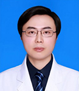 | Rong Yin |
Vice President of Jiangsu Cancer Hospital, Research, Professor, Deputy Director of Jiangsu Key Laboratory of Molecular and Translational Cancer Research |
Construction and Clinical Transformation of Lung Cancer Organoids |
28 |
Juan Zhang |
Chair of School of Public Health, Southeast University |
TBD |
|
29 |
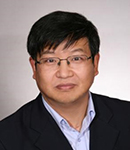 | Quanshun Zhang |
Senior Scientist and Program Director for Education and Outreach, Institute for In Vitro Sciences |
Advanced in Vitro Test Systems in Respiratory Toxicology |
30 |
Ying Zhang |
Associate Researcher, School of Biological Science and Biomedical Engineering, Southeast University |
Biomimetic Hydrogel Materials in Organoid Culture |
|
31 |
Bing Zhao |
Professor, School of Life Sciences, Fudan University |
Application of organoid technology in disease modeling and translational medicine |
|
32 |
Chen Zhao |
Professor of Nanjing Medical University, Deputy Chairman of Committee for Drug Clinical Evaluation Research of the Jiangsu Pharmaceutical Association |
Integration and Application of Quantitative Systems Pharmacology Modeling and MPS in Modern Drug Development |
|
33 |
Xiaobing Zhou |
Research Fellow, Head of the Toxicology Department of National Center for Evaluation of Drugs of NIFDC |
Regulatory Considerations for the Application of Organ-on-Chip in Drug Development |
|
34 |
Dan Zhu |
Distinguished Professor with the Huazhong University of Science and Technology, Wuhan, China; Vice Director with Wuhan National Optoelectronics Laboratory, Wuhan China |
Tissue Optical Clearing Imaging |
|
35 |
Jiangbo Zhu |
Professor, Department of Health Toxicology, Naval Medical University |
Application of Organ-on-a-Chip Technology in Drug Toxicology |
|